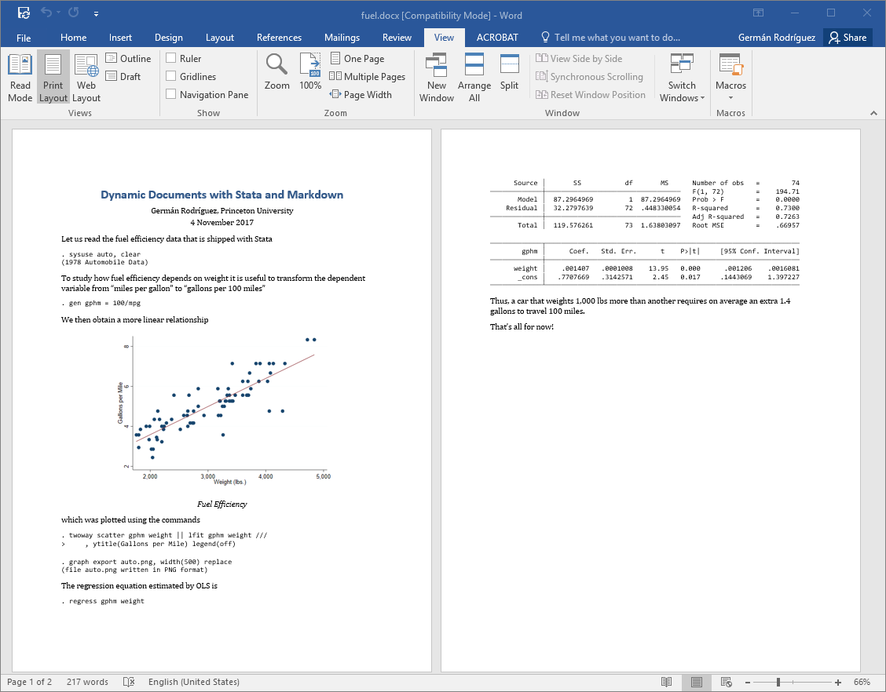

markstat 2.0 can generate Word documents from the same script used to
generate HTML or PDF via LaTeX. Here's the example in my SJ 17-3
article,
expanded to use metadata and inline code.
fuel.stmd% Dynamic Documents with Stata and Markdown
% Germán Rodríguez, Princeton University
% 4 November 2017
Let us read the fuel efficiency data that is shipped with Stata
sysuse auto, clear
To study how fuel efficiency depends on weight it is useful to
transform the dependent variable from "miles per gallon" to
"gallons per 100 miles"
gen gphm = 100/mpg
We then obtain a more linear relationship
{width="4.5in"}
which was plotted using the commands
twoway scatter gphm weight || lfit gphm weight ///
, ytitle(Gallons per Mile) legend(off)
graph export fuel.png, width(500) replace
The regression equation estimated by OLS is
regress gphm weight
Thus, a car that weights 1,000 lbs more than another requires on
average an extra `s %5.1f 1000*_b[weight]` gallons to travel 100
miles.
That's all for now!
Save the script as fuel.stmd, or download it from this website using
the Stata command
copy https://grodri.github.io/markstat/fuel.stmd fuel.stmd
The command markstat using fuel will generate a web page. Adding the
docx option, so the command becomes markstat using fuel, docx,
generates a Word document instead. A screen capture of the output is
shown below, or download the document here.

If you have a LaTeX installation, changing the option to pdf will
generate a PDF file via LaTeX, as shown here.
Of course you can always save a Word document as PDF, so the pdf
option is really for LaTeX aficionados who want to take advantage
of features unique to that format.
The figure size of 4.5 inches was chosen to produce good page breaks in both Word and LaTeX, a tall task given the differences in layout. At the time of writing there is no simple way to control page breaks in Word, other than editing the output document.
Generation of Word documents relies on a reference document called
markstat.docx, which is installed together with markstat in your ado
PLUS folder. This document serves as a template of sorts, and ensures
that Stata output is rendered well. You can edit this document to modify
built-in styles or to define your own styles. If you save your
customized reference document as markstat.docx in the current working
directory, it will be used instead of the default. This allows you to
define different styles for different projects, each in its own working
directory.
Built-In Styles. Pandoc uses a number of built-in styles, such as
Title, Author and Date. Suppose you wanted the title, author and date
block to be single spaced. To customize these styles, copy
markstat.docx to your current working directory and then open it in
Word.Modify the Title style, selecting Format, then Paragraph, and under
Spacing changing After to 0 pt. Do the same for the Author and Date
styles. Save the reference document. When you run markstat the title
block will be single spaced.
Custom Styles. Pandoc lets you assign attributes to text spans and blocks, and scripts generating Word documents may use the "custom-style" attribute to assign a custom style. For example to highlight some text you can code
[some text]{custom-style="Highlight"}
This works in Word because markstat's default reference document
includes a custom "Highlight" style, but there is nothing to stop you
from creating your own custom styles.
Paragraph Styles. In addition to character styles such as
"Highlight", you can define paragraph styles. Suppose you want to
create an indented paragraph style. Make a copy of markstat.docx, open
it in Word, and create a style called Indented, inheriting from the
Normal paragraph style, but setting Indentation Left and Right, for
example to 1 (inch) each. Save the reference document. You can now
include an indented paragraph in your Word document by coding
::: {custom-style="Indented"}
The text here will be *indented* in the Word document. This works because
we are using a customized reference document that defines this custom style.
:::
This uses Pandoc 2.0's new syntax for text blocks, similar to code fences but using colons. Inside the colon fences you may use Markdown syntax as usual, as I did with the word indented, which will appear in italics.
Underline. Markdown has no syntax for underline. When you are
generating HTML you can always use the <u> and </u> tags, as Pandoc
(and indeed all Markdown processors) pass HTML raw input straight to the
output. A markstat built-in extension intercepts these tags for
latex and docx formats and translates them appropriately, in the
case of Word by using a custom style. This means that you can use
underline tags in all three output formats.
The comparison between markstat and the new tools in Stata 15 has been
expanded to compare the docx option with putdocx, see Word
Documents. There you will also find a link to an
example reproducing the output in the announcement of putdocx.
New in markstat 2.0